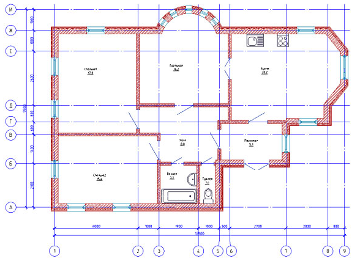
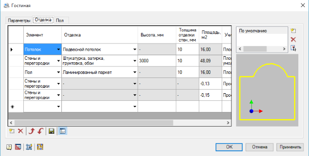

СОЗДАНИЕ В САПР «NANOCAD» ИСХОДНОЙ МОДЕЛИ ИССЛЕДУЕМОГО ПОМЕЩЕНИЯ
Цели работы:
1. Изучить САПР «NANOCAD»;
2. Создать на базе исходных данных модель помещения.
Теоретические сведения:
Для проектирования зданий, помещений и оформления технической документации предназначен NanoCAD СПДС. Основной функцией NanoCAD СПДС является оформление проектно-конструкторской документации в соответствии со стандартами СПДС. Программа содержит богатый инструментарий на основе технологии интеллектуального чертежа для автоматизации рутинных операций по оформлению готовых чертежей: планов, фасадов, разрезов, сечений, видов, узлов и т.д. Средствами NanoCAD СПДС наносятся все необходимые элементы оформления:
• отдельные координационные оси, ортогональные и полярные массивы;
• отрисовка и редактирование стен в плане;
• вставка стандартных окон и дверей из базы данных;
• работа с помещениями, генерация экспликации и ведомости отделки;
• отметки уровня;
• различные типы выносок (позиционная, гребенчатая, многослойная и т.д.);
• обозначения видов, разрезов, сечений;
• обозначения уклона, узла, фрагмента и позиции, маркеры изменения и позиционный;
• технические требования и характеристики;
• линейные, криволинейные линии обрывов и разрывов со скрытием части оборванной или разорванной геометрии;
• граничная штриховка, теплоизоляция, гидроизоляция и граница грунта;
• неразъемные соединения и сварные швы различных типов (угловые, стыковые заводские и монтажные);
• площадь помещения с автоматическим определением ее значения по замкнутому контуру;
• готовые форматы и таблицы по стандартам с возможностью их редактирования и создания пользовательских форматов и таблиц;
• однострочные и многострочные тексты, а также любые текстовые надписи элементов оформления используют специальный векторный шрифт, соответствующий единой системе конструкторской документации ГОСТ 2.304-81.
• элементы встроенной базы данных: архитектура, конструкции, профили, шаблоны документов и т.д.
• инженерные сети: коннекторы, трассы, оборудование;
• автоматическая маркировка.
Модуль «Архитектура» предоставляет возможность вычерчивать поэтажные планы с применением специальных инструментов и объектов. Основные инструменты и возможности модуля:
• линейные и дуговые сегменты при построении стен;
• настройка шаблонов стен – геометрии построения, толщины и состава материалов, штриховки, порядка построения и приоритета слоев и т.д.;
• инструменты редактирования стен;
• вставка оконных и дверных проемов из базы данных;
• простановка помещений на плане, описание помещения и отделки;
• формирование экспликации помещения и ведомости отделки помещения;
• нанесение объектов интерьера.
Пример плана помещения показан на рисунке 1.

Рисунок 1 – Пример плана, выполненного в модуле «Архитектура»
Выполнение экспликации помещений:
1. Выбираем команду «помещение» в модуле «Архитектура» и нажимаем курсором в любую точку нужного нам помещения (контур комнаты должен быть замкнут). В всплывающем окне во вкладке параметры заполняем нужные нам поля, например, имя, номер, категория, и устанавливаем птичку в маркерах на номер помещения. В зависимости от наших целей можем заполнить поля во вкладках отделка и пол (рисунок 2).

Рисунок 2 – Настройки отделки помещений
2. Выполнив теже действия для всех помещений переходим к следующей команде «Экспликация помещений». Выбрав данную команду обводим мышью весь объект и нажимаем кнопку Enter. Во вспомагательном окне выбираем нужные пункты. Далее на экран выводится заполненная таблица экспликации.
В программе содержатся готовые шаблоны наиболее распространенных табличных форм и стандартных форматок чертежей. Все форматки полностью стандартизованы. Кроме того, всегда есть возможность создать собственную форматку и штамп – например, с заполненными сведениями о компании (редактор активируется 2-ым нажатием мыши по штампу).
Практическое задание:
1. Изучить САПР «NanoCAD».
2. При помощи САПР «NanoCAD» произвести создание чертежа плана этажа здания согласно варианту. К зданию приложить экспликацию помещений с указанием площади.
3. Оформить выходной документ – чертеж здания с экспликацией помещений.
4. Оформить отчет.
Содержание отчета:
1. Титульный лист.
2. Цель работы.
3. Вариант задания.
4. Ход работы с пояснениями.
5. Чертеж здания с экспликацией помещений.
6. Вывод по работе.
Контрольные вопросы:
1. Что такое САПР?
2. Основные цели и задачи САПР?
3. Что такое NanoCAD, с какими САПРами он схож?
4. Какие преимущества и недостатки вы для себя выделили в NanoCAD СПДС?
5. Назовите основные панели интерфейса характерные только для NanoCAD СПДС?
6. Какими основными командами вы пользовались при выполнении практической работы?